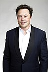

Илон Рив Маск родился 28 июня 1971 года в Претории (ЮАР) - канадско-американский инженер, предприниматель, изобретатель, инвестор. Илон Маск — основатель компаний Paypal, SpaceX, Tesla, а также член совета директоров компании SolarCity, основанной его двоюродными братьями.
С детства Илон много читал, любил фантастику, от Жюля Верна до Азимова, Хайнлайна и Толкина. Роман Дугласа Адамса Автостопом по галактике
помог ему справиться с личностным кризисом в четырнадцать лет, а книги Академия
и Луна — суровая хозяйка
пробудили в Илоне интерес к космосу, говорится в биографии Маска на сайте Мир фантастики
.
В 19 лет Илон поступил в Королевский университет в Кингстоне, Онтарио. В 1992 году Маск переехал в США и поступил в Пенсильванский университет, где получил степень бакалавра наук по физике колледжа искусств и наук, а также степень бакалавра по экономике Уортон школы бизнеса. Со временем перешел в Стэнфорд, но обучение не закончил.
Осенью 2018 года ряд трейдеров и акционеров Tesla подали в суд на Маска и обвинили главу компании в нарушении закона о ценных бумагах. Расследованием по данному административному делу занялась Федеральная комиссия по ценным бумагам США (SEC). В иске утверждалось, что Маск намеренно выдавал ложную информацию в Twitter-аккаунте, чтобы повлиять на цену акций Tesla. В своем личном аккаунте глава компании заявил о решении сделать Tesla частной фирмой и о том, что уже нашел финансы для выкупа акций. В сообщениях он также указал на то, что планирует выкупить ценные бумаги из расчёта 420 $ за акцию, то есть выше их рыночной стоимости.
Из-за критики со стороны пользователей социальной сети и акционеров Маск решил оставить Tesla публичной компанией. В сентябре 2018 года Министерство юстиции США параллельно с административным делом завело уголовное дело в отношении компании Tesla. По иску SEC Маску грозит запрет на занятие руководящих должностей в публичных компаниях.
В ответ на обвинения Илон Маск заявил следующее:
29 сентября 2018 года Маск и SEC урегулировали в досудебном порядке эти обвинения. Согласно договоренности, Маск останется руководителем компании Tesla, однако не сможет занимать пост председателя совета директоров три года. Кроме того, он должен выплатить штраф в размере 20 миллионов долларов. Такой же штраф наложен на компанию Tesla.Я глубоко разочарован необоснованными обвинениями SEC. Я всегда действовал в интересах инвесторов, и честность — самая важная ценность в моей жизни. Факты докажут, что я никогда и никого не ставил под угрозу.